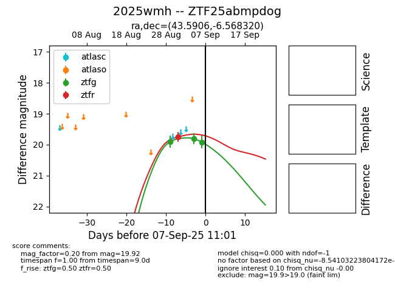

FINK: ZTF25abmpdog
Lasair: ZTF25abmpdog
ALeRCE: ZTF25abmpdog
TNS: 2025wmh
YSE: 2025wmh
ZTF25abmpdog (ztf,fink)
2025wmh (tns,yse)
equatorial (ra, dec) = (43.5906,-6.56832)
galactic (l, b) = (183.4013,-54.30646)

last ztfg=19.92, ztfr=19.83
3 ztfg, 3 ztfr detections